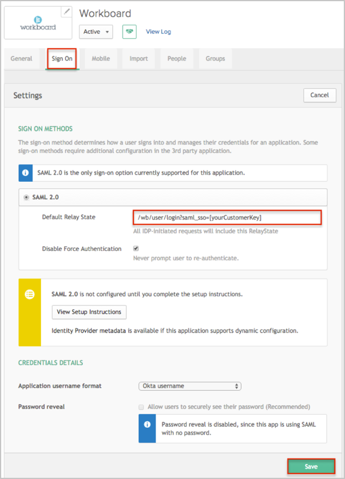
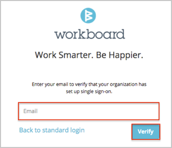

Send an email to the Workboard Support team and request that they enable SAML 2.0 for your account.
Save and attach the following to your email:
Metadata URL: Copy and paste the following:
Sign in to the Okta Admin app to have this variable generated for you
Unique Customer Key: [YourCustomerKey].
For example: if your Okta BaseURL is https://acme.okta.com/, use acme for the [YourCustomerKey] value.
In Okta, select the Sign On tab for the Workboard app, then click Edit.
For Default Relay State, enter /wb/user/login?saml_sso=[yourCustomerKey].
Click Save.

The Workboard Support team will process your request. After receiving a confirmation email, you can start assigning people to the application.
Notes:
IDP-initiated flows and SP-initiated flows are supported.
Just In Time (JIT) Provisioning is not supported.
For SP-initiated flows:
Open the following URL: https://www.myworkboard.com/wb/user/login?org=1
Enter your Email.
Click Verify.
